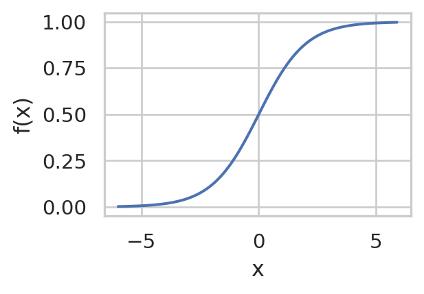
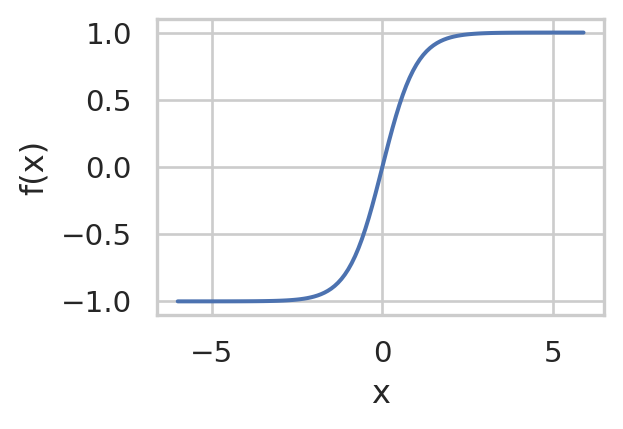
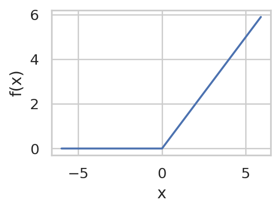
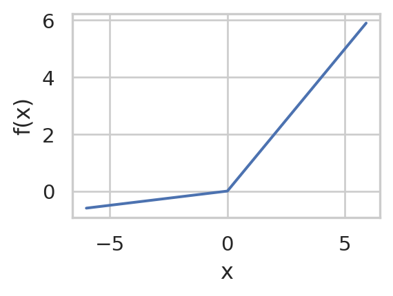
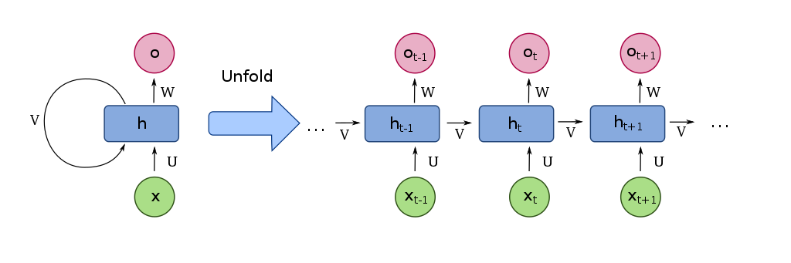
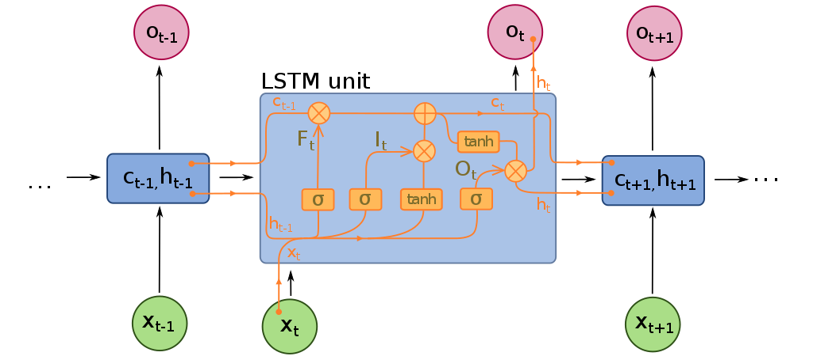
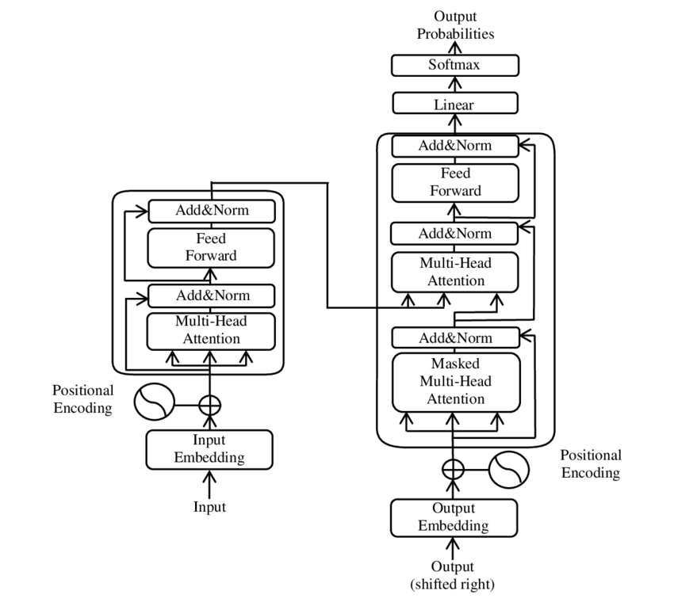
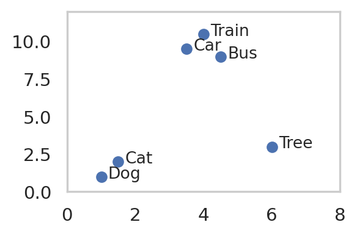

On the most basic level, neural networks consist of many simple models (e.g. linear and logistic models) that are chained together in a directed network. The models sit on the neurons (nodes) of the network. The most important components of neurons are:
Activation: a = Wx+b (W = weights and b = bias)
Non-linearity: f(x, \theta)=\sigma(a) (e.g. a sigmoid function for logistic regression, giving you a probability output. \theta is a threshold)
The neurons (nodes) in the first layer uses as its input the sample values and feeds its output into the activation function of the next nodes in the next layer, a.s.o. The later layers should thereby learn more and more complicated concepts or structures.
Different non-linear functions can be used to generate the output of the neurons.
Sigmoid/Logistic Functions
This activation function is often used in the last layer of NNs for classification (since it scales the output between 0 and 1).
f(x) = \frac{1}{1+e^{-x}}
Code
import numpy as npimport seaborn as snsimport matplotlib.pyplot as pltimport mathx = np.arange(-6, 6, 0.1)f =1/ (1+math.e**(-x))sns.set(rc={'figure.figsize':(3,2)}, style="whitegrid")sns.lineplot(x=x, y=f, )plt.xlabel('x')plt.ylabel('f(x)')
Text(0, 0.5, 'f(x)')

Pros:
Scales output between 0 and 1 (good for output layer in classification tasks)
Outputs are bound between 0 and 1 \rightarrow No explosion of activations
Cons:
No saturation / dying neuron / vanishing gradient: When f(x) = 0 or 1, the gradient of f(x) is 0. This blocks back-propagation (see here)
Output not centered around 0: All weight-updates during back-propagation are either positive or negative, leading to zig-zag SGD instead of direct descent to optimum (see here or here)
computationally more expensive than ReLu
Tanh Functions
f(x) = \frac{e^x - e^{-x}}{e^x + e^{-x}}
Code
import numpy as npimport seaborn as snsimport matplotlib.pyplot as pltimport mathx = np.arange(-6, 6, 0.1)f = (math.e**x - math.e**(-x) ) / (math.e**(x)+math.e**(-x))sns.set(rc={'figure.figsize':(3,2)}, style="whitegrid")sns.lineplot(x=x, y=f, )plt.xlabel('x')plt.ylabel('f(x)')
Text(0, 0.5, 'f(x)')

Pros:
Centered around zero
Cons:
saturation / dying neuron / vanishing gradient problem
computationally more expensive than ReLu
Rectifiers/ReLU
f(x) = \max(0,x)
Code
import numpy as npimport seaborn as snsimport matplotlib.pyplot as pltimport mathx = np.arange(-6, 6, 0.1)f = [max(0,x_i) for x_i in x] sns.set(rc={'figure.figsize':(3,2)}, style="whitegrid")sns.lineplot(x=x, y=f, )plt.xlabel('x')plt.ylabel('f(x)')
Text(0, 0.5, 'f(x)')

Pros:
Computationally cheap
No saturation for positive values
Cons:
Not zero centered
Saturation for negative values
Leaky ReLU
f(x) = \begin{cases}
\alpha x \text{ if } x < 0 \\
x \text{ if } x \ge 0
\end{cases}
Code
import numpy as npimport seaborn as snsimport matplotlib.pyplot as pltimport matha =0.1x = np.arange(-6, 6, 0.1)f = [(a*x_i if x_i <0else x_i) for x_i in x] sns.set(rc={'figure.figsize':(3,2)}, style="whitegrid")sns.lineplot(x=x, y=f, )plt.xlabel('x')plt.ylabel('f(x)')
Text(0, 0.5, 'f(x)')

Pros:
No saturation problem
fast to compute
more zero-centered than e.g. sigmoid-activation
13.2 Terminology
Input layer/visible layer: Input variables
Hidden layer: Layers of nodes between input and output layer
Output layer: Layer of nodes that produce output variables
Size: Number of nodes in the network
Width: Number of nodes in a layer
Depth: Number of layers
Capacity: The type of functions that can be learned by the network
Architecture: The arrangement of layers and nodes in the network
This is the simplest type of proper neural networks. Each neuron of a layer is connected to each neuron of the next layer and there are no cycles. The outputs of the previous layer corresponds to the x in the activation function. Each output (x_i) of the previous layer gets it’s own weight (w_i) in each node and a bias (b) is added to each node. Neurons with a very high output are “active” neurons, those with negative outputs are “inactive”. The result is mapped to the probability range by (commonly) a sigmoid function. The output is then again given to the next layer.
If your input layer has 6400 features (80*80 image), a network with 2 hidden layers of 16 nodes will have 6400*16+16*16+16*10+16+16+10 = 102'858 parameters. This is a very high number of degrees of freedom and requires a lot of training samples.
from torch import nnclass CustomNet(nn.Module):def__init__(self):super(CustomNet, self).__init__()self.lin_layer_1 = nn.Linear(in_features=10, out_features=10)self.relu = nn.ReLU()self.lin_layer_2 = nn.Linear(in_features=10, out_features=10)def forward(self, x): x =self.lin_layer_1(x) x =self.relu x =self.lin_layer_2(x)return xdef num_flat_features(self, x): size = x.size()[1:] # Use all but the batch dimension num =1for i in size: num *= ireturn num new_net = CustomNet()
Example of a small Keras model for text-classification.
from keras.models import Sequentialfrom keras import layersembedding_dim =20sequence_length =50vocab_size =5000# length of word index / corpus# Specify model:model = Sequential()model.add(layers.Embedding(input_dim=vocab_size, output_dim=embedding_dim, input_length=sequence_length))model.add(layers.SpatialDropout1D(0.1)) # Against overfittingmodel.add(layers.GlobalMaxPool1D())model.add(layers.Dense(10, activation='relu'))model.add(layers.Dense(1, activation='sigmoid'))model.compile(optimizer='adam', loss='binary_crossentropy', metrics=['accuracy'])model.summary()# Train model:history = model.fit(train_texts_padded, y_train, epochs=5, verbose=True, validation_data=(test_texts_padded, y_test), batch_size=100)loss, accuracy = model.evaluate(train_texts_padded, y_train)print("Accuracy training: {:.3f}".format(accuracy))loss, accuracy = model.evaluate(test_texts_padded, y_test)print("Accuracy test: {:.3f}".format(accuracy))
13.4 Back-propagation
This is the method by which neural networks learn the optimal weights and biases of the nodes. The components are a cost function and a gradient descent method.
The cost function analyses the difference between the designated activation in the output layer (according to the label of the data) and the actual activation of that layer. Commonly a residual sum of squares is used.
You get the direction of the next best parameter-combination by using a stochastic gradient descent algorithm using the gradient for your cost function:
We use a “mini-batch” of samples for each round/step of the gradient descent.
We calculate squared residual of each feature of the output layer for each sample.
From that we calculate what the bias or weights from the output layer and the activation from the last hidden layer must have been to get this result. We average that out for all images in our mini-batch.
From that we calculate the weights, biases and activations of the upstream layers \rightarrow we back-propagate.
13.5 Initialization
The weights of the nodes are commonly initialized randomly with a certain distribution. The biases are commonly initialized as zero, thus 0-centering of the input data is recommended.
14 Types of NNs
14.1 Convolutional Neural Networks
14.2 Encoder-Decoder Models
Autoencoder models
Contrary to the other architectures, autoencoders are used for unsupervised learning. Their goal is to compress and decompress data to learn the most important structures of the data. The layers therefore become smaller for the encoding step and the later layers get bigger again, up to the original representation of the data. The optimization problem is now: \min_{W,b} \frac{1}{N}*\sum_{i=1}^N ||x_i - \hat{x}_i||^2 with x_i being the original datapoint and \hat{x}_i the reconstructed datapoint.
Model of an autoencoder. The encoder layers compress the data towards the code layer, the decoder layers decompress the data again. Figure from Michela Massi on wikimedia.org.
Autoencoders for clustering
You can look at layers of a NN as ways to represent data in different form of complexity and compactness. The code layers of autoencoders are a very compact way to represent the data. You can then use the compressed representation of the code layer and do clustering on that data. Because the code layer is however not optimized for that task. Song et al. combined the cost function of the autoencoder and k-means clustering: \min_{W,b} \frac{1}{N}*\sum_{i=1}^N ||x_i - \hat{x}_i||^2 - \lambda \sum_{i=1}^N ||f(x_i) - c_i||^2 with f(x_i) being the non-linearity of the code layer and \lambda is a weight constant.
XXXX adapted spectral clustering (section 3.3) using autoencoders by replacing the (linear) eigen-decomposition with the (non-linear) decomposition by the encoder. As in spectral clustering the Laplacian matrix is used as the the input to the decomposition step (encoder) and the compressed representation (code-layer) is fed into k-means clustering. Deep subspace clustering by Pan et al. employs autoencoders combined with sparse subspace clustering. They used autoencoders and optimized for a compact representation of the code layer: \begin{split}
\min_{W,b} \frac{1}{N}*\sum_{i=1}^N ||x_i - \hat{x}_i||^2 - \lambda ||V||_1 \\
\text{s.t.} F(X) = F(X)*V \text{ and diag}(V)=0
\end{split} with V being the sparse representation of the code layer (F(X)) .
14.3 Generative adversarial networks
14.4 Recurrent neural networks (RNN)
Compared to the fully connected or convolutional neural networks, RNNs can work on variable length inputs without padding the sequences.

A unit of an RNN. The left side shows a static view of a unit h. The right side shows how the activations of past inputs (x_{t-1}) influence the output (o_t) of the current input (x_t). U, V and W are weights (Beware: They stay the same for different inputs). Figure from fdeloche on wikimedia.org.
Problem: The influence of previous inputs vanishes (or potentially explodes) with the sequence length (unfolding). This makes the network hard to train. This is mitigated by LSTMs (below).
Instead of just using the influence of previous inputs (“short-term memory”), LSTMs incorporate influence of more distance inputs (“long-term memory”). \rightarrow There are two paths to influence the current state.

A unfolded view of a unit of an LSTM. c_{t} (top horizontal path) is the cell state and represents the long-term memory. h_t ( bottom horizontal line) is the hiddenstate and represents the short-term memory. The weights are not shown in this diagram. F_t is the forget gate and determines the percentage of the long-term memory that is remembered based on the short-term memory and input. I_t is the input gate and determines how/whether to update/create the long-term memory using the input and short-term memory. O_t is the output gate and determines the short-term memory to be passed on to the next time-step. Thus the output of the cell is the modified long- and short-term memory. Figure from fdeloche on wikimedia.org.
Transformers are encoder-decoder models with the following setup:
Encoder: Containts one attention unit, the multi-head attention. It learns the relationships between elements in the input sequence.
Decoder: Contains two attention units:
The masked multi-head attention: It learns relationship of the current element and previous words in the output sequence.
The multi-head attention: It learns the relationship of the (current and previous) elements in the output sequence and the learned representation of the input from the encoder.
Like LSTMs, transformers use attention mechanisms to learn relationships between input elements. There are key differences, however:
The sequences are passed in simultaneously (not sequentially as in RNNs). Many computations can be done in parallel.
Positional encoding: Since the elements are fed-in in parallel, the position of the elements within the sequence is encoded.
Masking: Since elements are fed-in in parallel, the elements that the model shall predict, are masked (overwritten with zeros) from the output-sequence during training.
Self-attention: The significance of an element (e.g. word) is learned by specific elements around it. Contrary to RNNs, the dependencies don’t grow/shrink linearly with t, but are independent of the distance.

Architecture of transformer models. The encoder is on the left. The decoder is on the right. The encoder-outputs are passed to it in sequence. Output-sequence elements that come after the current input element are masked. The decoder generates the next element of the output. There are commonly multiple encoder and decoder units in sequence and multiple attention units in parallel. Figure from Yuening Jia on wikimedia.org.
LLMs are transformer models, that have been trained on a huge amount of unlabeled data.
Pros:
They are very performant
They are easily adaptable for other use cases.
Cons:
The training data of the models is often unknown or insufficiently sanitized (containing false information, hate speech, outdated info, etc. )
The models are so huge, that it takes a lot of compute power just to use it for predictions.
To deal with these problems, You can tune late layers in pre-trained LLMs to increase their accuracy for your field of application without having to train a huge model.
15 Learnig methods
There are specific methods for learning in neural networks.
15.1 Transfer learning
You train a model on one (usually large) dataset and adapt it for a different, but related learning task. The feature space and distribution of the input and target data of the new task can be different from the old task.
Instance Transfer
You take the samples from the dataset of the initial task and mix them into the dataset of the new task.
Domain adaptation
In domain adaptation the feature space is similar to the original dataset.
15.2 Meta-learning
You do not train a model directly on the target task, but train the model to distinguish different samples on many other tasks where you have enough training data (thus learning to learn). You build such a model with the aim to adapt it or directly use it for the target learning task with very few samples.
Definitions:
Training Set: The large set of samples used to train the model.
k-way n-shot Support Set: The very small set with n samples used to distinguish k classes. It is either used to adapt or directly query the pre-trained model. The class labels of the samples are only in the support set - not the training set.
Query Set: The set of samples used to query the model.
You commonly train or fine-tune a model using contrastive learning (chapter contrastive learning).
Common pre-trained models:
NLP
SBERT (Sentence Bert)
SRoBERTa
Images
Time Series
Few-shot learning
You have very few (1-20) samples per class in your support set. Before you use the approaches below, you should use data augmentation to increase the sample size.
Metric-based learning
Instead of adapting the weights of the model, you provide the model with representative reference samples. You then compare the internal representation of the model of the reference samples and the new samples. The new samples are classified according to the most similar reference samples.
In context learning is a special case of few-shot learning in large language models, where you provide the reference samples in the prompt to the model. This has the disadvantage, that your performance is dependent on prompt engineering and the model to be used will be very large (expensive and slow).
Fine-tuning
You adapt the weights of the model to the new task. To successfully do this with very few samples, you need suitable pre-trained models for this. To prevent overfitting, we limit the parameters of the model we adapt and use regularization (i.e. entropy regularization). A common technique is to only fine tune the similarity and softmax function of the model. More details here: [youtube.com - Shusen Wang: Few-Shot Learning pt. 3]
15.3 Contrastive Learning
You train/fine-tune a model, so that similar samples are close together in feature space and dissimilar samples are far apart. This is done by using a contrastive loss function. The model is trained on pairs of samples. The loss function is minimized, when the distance between similar samples is small and the distance between dissimilar samples is large.
import pandas as pdimport matplotlib.pyplot as pltfeature_df = pd.DataFrame(data= {"x": [1, 1.5, 3.5, 4, 4.5, 6],"y": [1, 2, 9.5, 10.5, 9, 3],"object": ['Dog', 'Cat', 'Car', 'Train', 'Bus', 'Tree']})#create scatterplotplt.scatter(feature_df["x"], feature_df["y"])#add labels to every pointfor idx, row in feature_df.iterrows(): plt.text(row["x"]+0.2, row["y"]-0.1, row["object"], fontsize=10)plt.xlim(0, 8)plt.ylim(0, 12)plt.grid(visible=False)

Conceptual example of a feature space in contrastive learning. The model was trained to distinguish between “animals”, “vehicles” and “plants”.
Common model architectures for contrastive learning are:
Siamese networks (use pairs of samples for training. Samples from same classes are labeled positive, samples from different classes are labeled negative)
Triplet networks (use triplets of samples containint an anchor sample, a positive sample (same class as anchor) and a negative sample (different class as anchor). The model is trained to minimize the distance between the anchor and the positive sample and maximize the distance between the anchor and the negative sample.)
graph LR
A[Input 1] -- "base model
`" --> A1("Embedding 1")
B[Input 2] -- "base model
`" --> B1("Embedding 2")
A1 --> C("Difference vector")
B1 --> C
C -- "dense layers
sigmoid" --> D[Similarity score]
Conceptual example of a Siamese network. Note, that the base model is shared between the two inputs.


{kind=link}
{kind=link}
{kind=link}
{kind=link}
{kind=link}